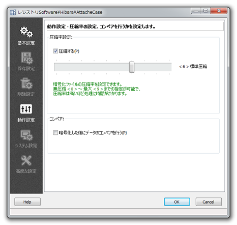

アタッシェケースで作成する暗号化ファイルの圧縮率の設定や、
復号時にきちんとファイルが正常に戻っているか確認するためのコンペア設定を行えます。

チェックをすると、暗号化の際にデータ圧縮を行います。
また、スライダバーを調節することで、圧縮率を設定できます。
初期設定では、 < 6 > になっています。
圧縮率を大きくするほど、暗号化したファイルサイズが小さくなりますが、 処理に時間がかかります。その辺はユーザーさんの用途に応じて使い分けてください。
0～9の間で圧縮率の設定ができます。
基本的には、zlibライブラリ （別作者による圧縮プログラム）の仕様に則した設定値となっています。
アタッシェケースへ組み込む前に、各段階で圧縮解凍してテストしましたので、 段階によって復号できなくなるということはありません。
また、圧縮率はデータ内容に依存しますので、データの種類によってはあまり圧縮も効かず、 実感としてスピードもあまり変わりがない、ということもあります。
ファイル、またはフォルダを暗号化した後に、元データとコンペア（データ比較）を行い、 正しく復号できているかどうかをチェックします。バックアップファイルなど、 大事なデータとして暗号化したい場合に設定しておくと安心です。
ただし、暗号化したファイルをメモリ上で馬鹿正直に復号化処理を行ってからコンペアをとっていますので、 非常に時間がかかります。暗号と復号の処理を１セットで行うのと同じと考えてください。 ハードディスク等へ書き込まない分だけ、ちょっと速いくらいでしょうか。
なお、元ファイルの完全削除設定をしている場合には、コンペアが行われた後に削除実行されます。
Copyright© 2002-2013 M.Hibara, All rights Reserved.